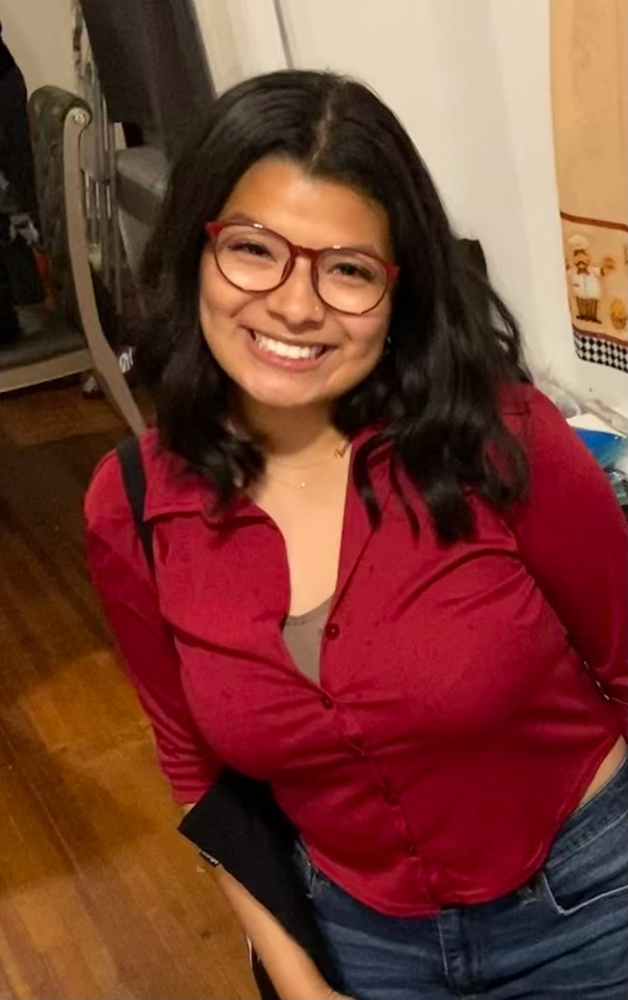

Hello! My name is Tamara Parks and I am currently on a gap year, between graduating high school and entering college. I am drawn to community spaces that allow you to show up as you are. Moving forward I'm interested in learning about all the spaces and subjects that fuel me and can act as an outlet for human expression. This webpage has been a product of my time at District Arts and Education, where I am completing their adult skills academy program focused on software engineering.
For one of the module projects I decided to create a website that highlights some of my gap year endeavors. I have added a sustainability section to showcase my interest in community farming, a fundraising section to introduce my interest in service learning this summer, and a treats section to share my love for baking.
I hope that the love I have for my interests inspires you to pursue avenues where you get to engage with your own!
